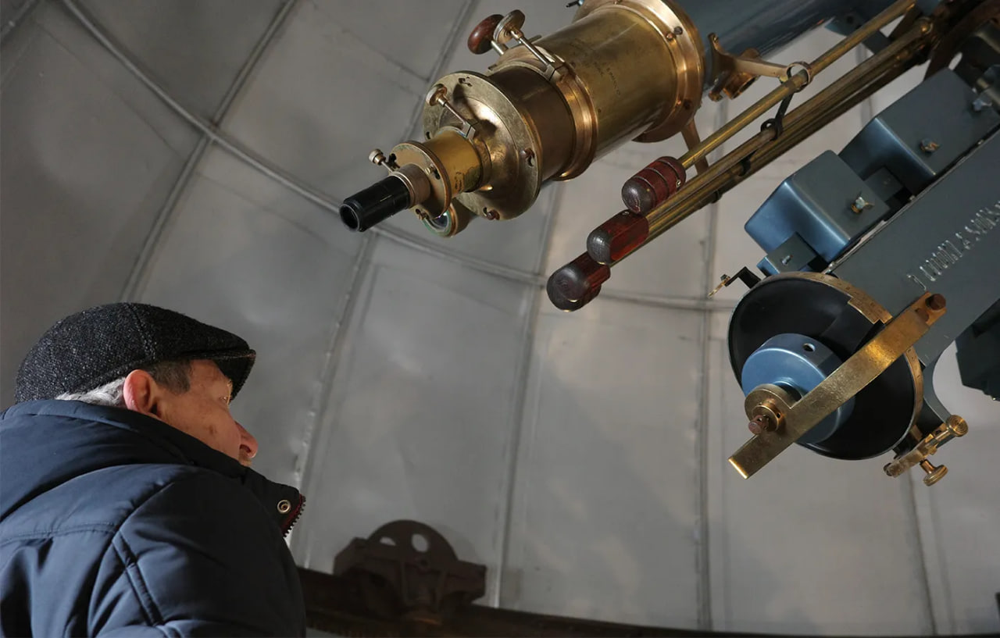

Star war
15.03.26
On August 15, 1871, a municipal observatory started working at the Odesa Langeron tract. On January 13, 2026, almost 155 years later, a Russian drone hit the electric substation adjacent to the institution. In the building of the Observatory, the windows were shattered, the roof was destroyed, and the equipment was damaged. Still, the 14 scientists who remain here are not pausing the decades-long research.
The Odesa Astronomical Observatory isn’t hard to spot if you’re looking for it. It is located in the city center, surrounded by the Taras Shevchenko Park. Farther away, there’s only the Chornomorets Stadium and then the sea.
At the beginning of the 19th century, the Khadjibey fortress stood here; the Duke of Richelieu, the Governor-General of the Russian Empire's Black Sea coastal territories at the time, used it as a quarantine for plague victims. In a couple of decades, the University was opened in the city, with a chair of astronomy; the observatory was built to meet its needs. The observatory employees planted the first trees in the park to shield their observations from dust and smoke.

At first, the park was named after the Emperor Alexander II, who abolished serfdom, but also signed the Valuev Circular and the Ems Ukaz, prohibiting the usage of the Ukrainian language in most public spheres.
Over time, both the observatory and the adjacent park grew. In the middle of the 20th century, a small planetarium was built here. A couple of years ago, a digital one, with a spherical cupola, was constructed. Even after Russian strikes, schoolchildren, citizens, and tourists in Odesa continue to visit it for tours every Saturday. Also, the research that began at the end of the 19th century is still ongoing.
The light from distant stars reaches the Earth in years, sometimes millions of years. Thus, the astronomers always peer into the past. The archives of the Odesa Observatory's observations allow us to peer even deeper into the past.

Blinded by the light
Nowadays, building a facility to observe the stars within a city doesn’t seem very logical. And yet it was common practice for science at the time: the Vienna, Berlin, and Paris Observatories were also built in urban spaces. Then, the majority of tasks in an observatory were determining coordinates, time calibration, and providing other services for the city. Besides, their maintenance was easier closer to the universities they were affiliated with. In Ukraine, for example, the Lviv Observatory operates similarly, being affiliated with the Lviv Ivan Franko University and located in the city center near the university’s premises.

At the end of the 19th century, European astronomers noticed that new buildings surrounded the institutions, and the quality of observations was starting to suffer from the growing light pollution and vibrations caused by traffic. However, Mykola Koshkin, the director of the Odesa Astronomical Observatory, says that even 50 years ago, this issue wasn’t as pressing:
“I came here in 1972, and we didn’t have so much urban lighting at the time. You walk around the observatory in the evening, and there’s complete darkness and a wonderful starry sky. Nowadays, if you look up, the sky is lit by the city and the stadium. The stars are almost invisible.”

Volodymyr Tsesevych, an astronomer and researcher of variable stars who led the observatory’s operations from 1948 to 1983, noticed the same problem and ensured the establishment of observational stations farther from the city lights; this is how the bases in the villages of Maiaky and Kryzhanivka came into being. Unfortunately, the urban landscape slowly approaches, threatening to swallow the latter as well.
Family pictures of the Universe
Nowadays, most of the observatory’s operations are based in Maiaky. Since the occupation of Crimea, the 80-cm telescope, the biggest in Ukraine, has been located here. It was manufactured entirely at the Odesa Observatory. A collection of 100,000 glass plates coated with light-sensitive emulsion is also preserved in Maiaky; it’s an astronegative archive with the oldest images dating back to 1909.
Every night, the astronomers used a 7-camera astrograph with seven small lenses, each covering a different area of the night sky, to record the positions of the stars. It has created over 80,000 images since 1957. Maiaky also hosts a collection of images created by older equipment (around 10,000) and 8,000 plates relocated from the Symeiz Observatory in Crimea. The collection is the third-largest in the world, after the Harvard (500,000 plates) and the Sonnenberg (250,000 plates) collections.
The plates are important not just as artifacts of the past. They help scientists to observe the dynamic changes of the sky since the beginning of the 20th century: “If an astronomer needs data about the state of a certain object 50 years ago, they use this kind of astronegative archives. One may see how the object's brightness was changing and what was happening to it in general at the time. It lengthens the history of objects’ observation”, Mykola Koshkin explains.

Maiaky is situated near the border with Moldova, and several logistics routes pass through the village. So, in December 2025, Russian troops destroyed the local bridge across the Dnister River, striking it with drones and ballistic missiles. Serhiy Sukhomlyn, the head of the Agency for Restoration of Ukraine, says that Russians hope to hinder the supply of petroleum products and to close off the ports this way.
The over-century-old sky observations are also threatened. These days, the windows on the station’s premises are reinforced to at least help protect the collection. It’s hard to relocate it from Maiaky because the brittle glass plates require special transport conditions. Therefore, employees and volunteers do their best to safeguard the collection with the available means. In particular, the university alumni abroad are raising funds to equip a vault in the station’s basement, creating the conditions required for preservation.

“This astronegative archive is like family pictures. You can see what your grandparents and great-grandparents looked like. It's the same with astronomical objects”, Mykola Koshkin says.
The materials haven’t been digitized yet; powerful scanners and substantial investments are needed to do so. There were offers; however, they came from China.
“The Chinese scientists were very eager to receive our archive for digitization; together with the Japanese, they built a couple of specific, powerful scanners. They say, “Take them here, we will scan them and give them back.” We went to China, looked at the conditions, and sent them a small trial batch. They showed us digital scans of great quality. But then, the full-scale invasion started, and the collaboration was interrupted. We would love to do it in Ukraine instead of China, for example, in the framework of the Ukrainian Virtual Observatory.”

And yet they turn
City lights are not the only thing dimming the starry sky. Up above, on the geocentric orbit, cosmic waste hinders the astronomers. Mykola Koshkin corrects: not waste, but debris. He thinks that the word “waste” sounds too negative.
The amount of debris in orbit is growing dramatically. According to data from the European Space Agency, the observational systems currently track around 40,000 objects, of which only 11,000 are in active use. And yet, the number of debris larger than 1 cm capable of causing severe damage exceeds 1.2 million.

One of the two telescopes located in the Shevchenko Park is used to observe this kind of debris, the current work of Mykola Koshkin is focused on it. He opens the door to a small room, where he spends hours in observation every day since 2006, if the weather allows, collecting data for the database. Most space in the cupola is occupied by the KT-50 telescope, there’s not much room for people.
The Odesa Observatory obtained the specialized KT-50 telescope, the first of a small series, in 1971. “Here, under the cover, there’s the serial number: 001”, Mykola Koshkin says. We trust his words — it’s hard to peer inside.

The KT-50 model was first developed for military use, to monitor trajectories of missiles. But with the dawn of the cosmic era, they started observing artificial Earth satellites. These days, they are used to correct satellite and debris orbit measurements, and to record their coordinates and revolutions around the axis.
“To send a manipulator to catch a large piece of debris and slow it down enough for it to start lowering and burn in the atmosphere, we need to know how it’s revolving. These kinds of missions are already starting, and this information is very useful for the future.”
You need at least two people to operate KT-50. The university mate of Mykola Koshkin, an experienced engineering scientist, works on the telescope, even though he’s not officially employed here. “He helps me maintain it in a good working condition, but he’s currently retired,” the scientist says.

Mykola Koshkin’s answer to how they work during power outages is terse: “We don’t”. The institution has a generator, but it’s not enough to power a large telescope with all its equipment.
“We had three such telescopes,” the scientist says, “this one is the oldest, the first from the factory. Later, when Ukraine separated from the USSR, a military base in Crimea was writing off other ones, and we bought two more. Currently, we use the second one for spare parts, and the third one was gifted to the Mykolaiv Astronomical Observatory.”
Though the equipment isn’t visibly damaged, its automatic systems were obviously impaired by the Russian strike: the system of sensors that calculates the satellites' coordinates relative to the stars has malfunctioned, and they are currently working to fix it. “And then we will continue our observations,” Mykola Koshkin says, ending the tour of the telescope on an positive note.
Cooke’s legacy
The building with a telescope constructed in 1886 in British York sustained the worst damage. The telescope was restored a couple of years ago, and today, even after the impact, it shines blue and bronze in the light. On its side, one can see an engraving of the manufacturer T. Cooke & Sons, which built equipment for the Greenwich Observatory, among other institutions. Its 165-mm lens is currently used mainly for popularization of astronomy: to observe Saturn’s rings, nebulae, and star clusters.

“It was used earlier as a scientific instrument, but nowadays, its lenses are partially obsolete. It was used in some projects, for example, to observe the movement of Mercury across the Sun’s disk. The Sun is bright, and this telescope is sufficient for it,” Mykola Koshkin says.

Recently, French experts have visited the observatory: “They were interested in doing some measurements with an antique ‘meridian circle’ telescope, a historical peer of this Cooke telescope, to tie some old data to modern star coordinates measurements.” But the collaboration hasn’t started yet.

To see the observatory's oldest telescope, we have to pass by the damaged classes and the library: the rooms where classes for students and workshops for children were held are now strewn with glass shards and ceiling fragments, and hundreds of books are piled up in the corridor. “I studied in this room, too,” the scientist remarks.

In the library, renovation was planned at the time: the employees painted the windows, walls, and ceiling, and patched the holes themselves, but after the Russian strike, more pressing issues emerged. Currently, thanks to the efforts of the Mechnikov National University, which sent a team of workers on the day of the strike, the windows are covered with OSB plates and film. The observatory’s employees and their colleagues from the Odesa Observatory of the Radioastronomical Institute of the National Academy of Sciences of Ukraine covered the destroyed roof with tents. During our conversation, Mykola Koshkin is regularly distracted by phone calls: he tells the sizes of windows and doors and tries to determine which materials are best for the roof.

A marble staircase, with a gaping hole above it, leads us to the telescope. The explosive wave has warped the original doors and windows that were planned for restoration.
In 2023, the Odesa historical center, including this building, was added to UNESCO's World Heritage Sites List. Two years later, the observatory was added to the list of objects under special protection according to the Second Protocol of the Hague Convention for the Protection of Cultural Property in the Event of Armed Conflict. Thanks to it, Russia can be held accountable on criminal charges for the damages, according to these norms.

However, Ukrainians are well aware of how International law differs in theory and in practice. Chiara Dezzi Bardeschi, the Head of the UNESCO Desk in Ukraine, has announced the beginning of the technical expertise and evaluation of the damages dealt by the attack, but when we asked Mykola Koshkin whether the UNESCO representatives visited the observatory, he answered: “UNESCO? No. Only representatives from the municipal department of protection of monuments of cultural heritage visited us.” Ukrainian police also initiated a criminal investigation of the attack.

The closest space to the Russian drone impact is the room in the observatory where employees used to work daily:
“When the substation on Krasnov St. was hit, I ran to work and implored them to move to the main building because this place could be hit as well. They didn’t want to leave their workplaces. Then I moved the computers with databases, work programs, and hard drives with important information collected during two decades of work. And half a month later, the strike happened here as well.”

People who hold the sky
As previously, the observatory currently relies on donations from businesses, private donors, and employees’ enthusiasm. After gaining independence, Ukraine didn’t have enough money to maintain scientific institutions, and research wasn’t a priority in state budgeting for decades.
Nowadays, only 14 people work here. They try to continue the research and maintain the infrastructure that, in the 1970s and 1980s, was maintained by 150 employees. Mykola Koshkin shows us the details of the “telescopes that were not constructed” as evidence of that; now, they are piled up in the courtyard like museum exhibits. “This is the place for an astronomical mirror, and next to it lies the glass prepared for it. These are the parts for a meter telescope; these are for a 1.5-m telescope.”

The observatory currently lacks any supporting personnel: “The university took our security guards and funds them from student fees. We have neither a gardener, nor a custodian, nor a janitor left. A former research associate became a deputy director for facilities management. She takes care of the whole territory, she washes the floors and maintains order.”
Scientific research is continuing thanks to “a couple of people, real professional researchers” who remained. They fulfil daily tasks and, every year, participate in competitions organized by the Ministry of Education and Science of Ukraine with their projects, hoping to secure funding renewal. But part of the experts are not employed here, “they have no official ties to the observatory, but they are former employees who work without getting paid and continue to publish scientific articles”.
“Two other scientists work with the telescope used for my observations. I ‘share’ my wage with them (it’s not much, by the way, less than 10,000 hryvnas), because I need people to do research,” Mykola Koshkin says.

Another thing that helps during financial instability is collaboration with foreign colleagues. Before Ukraine became independent, a new telescope was constructed in the observatory, with a one-meter-diameter mirror. They planned to install it in Maiaky and had already built a tower for it.
“But we ran out of money. And at the beginning of the 2000s, we signed a contract with an observatory in Slovakia. An alumnus from our university was working there, and we moved the telescope there. The Slovaks built a suitable tower for it. At the time, it was the biggest telescope in their country. Later, it stopped satisfying their needs because it wasn’t automated enough.”

Modern telescopes are often smaller in diameter (30-40 cm) but much more movable; they are moved quickly and automatically focus on astronomical objects. They are more dynamic, easier to work with, and it is easier to teach students to use them, Mykola Koshkin explains: “Our 1 m telescope is used less and less nowadays. But our researchers come to Slovakia every year to conduct their observations both on our telescope, and on theirs.”
According to the documents, the telescope is moved there temporarily, and the permit to continue holding it there is constantly renewed, Mykola Koshkin explains. To bring it back, enormous funding would be required, and there’s no sense in returning it anyway. “We count on our authorities to finally agree to ‘gift’ the telescope to the Slovaks and to continue its joint use. What does it matter where it is situated, if it works for science and a friendly partner maintains it in working condition?”
And yet, the director of the observatory believes that it will get its scientific potential back:
“If you only knew, how many of our alumni work abroad: in Europe, the US, Thailand, Australia, Italy, Belgium. The quality of our education and their talent allow them to go abroad to conduct modern research. Very few people remain at the observatory, and we may only hope that someday, our alumni will return and revive everything here.”
The reportage is published with the support of the Alfred P. Sloan Foundation.